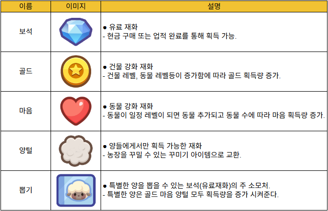

양 세는 소녀:
방치형 농장 키우기
‘양 세는 소녀’는 2025년 12월에 출시한 방치형 SNG 장르의 모바일 게임입니다.
방치형 + 꾸미기 + 유저 간 방문 구조를 결합해 코지 장르에서 차별화된 커뮤니티 기반 리텐션을 만드는 게임을 목표로 하고 있습니다.
코어 루프
- 의도 : “낮은 피로도로 플레이 타임을 확보할 수 있는 방치형 구조.”
- 사이드 컨텐츠 플레이 >> 재화 획득.
- 건물 업그레이드 및 동물 수집을 통한 성장.
- 온라인 상태 유지 시 양털을 비롯한 재화 획득 >> 획득한 재화를 통해 농장 꾸미기.
경제

업데이트 방향
컨텐츠 업데이트를 “단계별 해금 + 반복/일일 컨텐츠 확장”으로 구성해 전체 유저의 플레이 타임과 리텐션을 안정화

코어 루프 중 방치형 영역 및 농장 확장 관련 기능 개발은 완료 되었으나 보상 컨텐츠 부족.
단계별 컨텐츠 해금, 컨텐츠 추가
- 단순 터치로 반복해서 발동하는 이벤트
- 짧은 반복적으로 참여 가능한 즉시 보상형 컨텐츠
- 광고 시청 시 추가 보상 획득을 통한 BM 강화
- 하루 한번씩 진행 가능한 이벤트
- 접속 일수가 누적될수록 획득 보상을 강화하여 리텐션으로 이어지도록 연결
- 공통 : 모든 유저 대상의 세션타임 확보
목표 KPI
리텐션
- D1 30% : 3번째 건물 도달률 50% 달성 (단계별 컨텐츠 해금으로 초기 목표 달성 유도).
- D7 10% : 5번째 건물까지 “하루 1회 컨텐츠”로 재방문 이유 강화.
- D30 3% : 반복/일일 컨텐츠 누적으로 고정 유저층 확보.
세션
- 일일 평균 세션 타임 15분 유지.
수익화
- 광고를 시청할 이유를 강화하여 광고 제거 구독권 구매 유도.